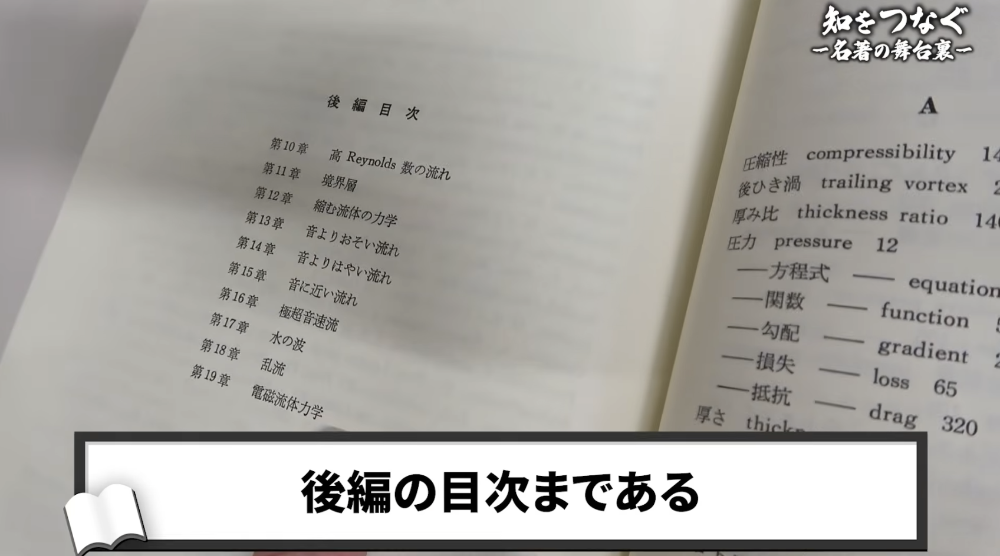
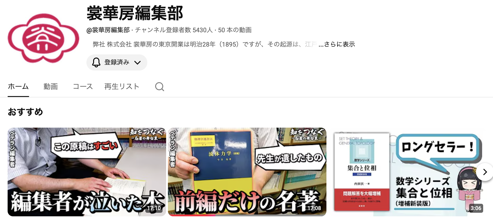
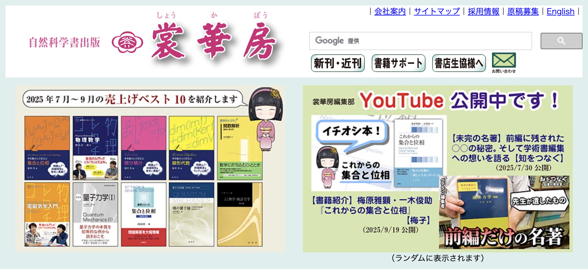
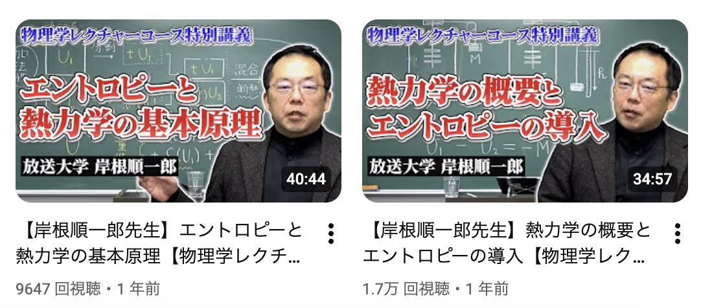
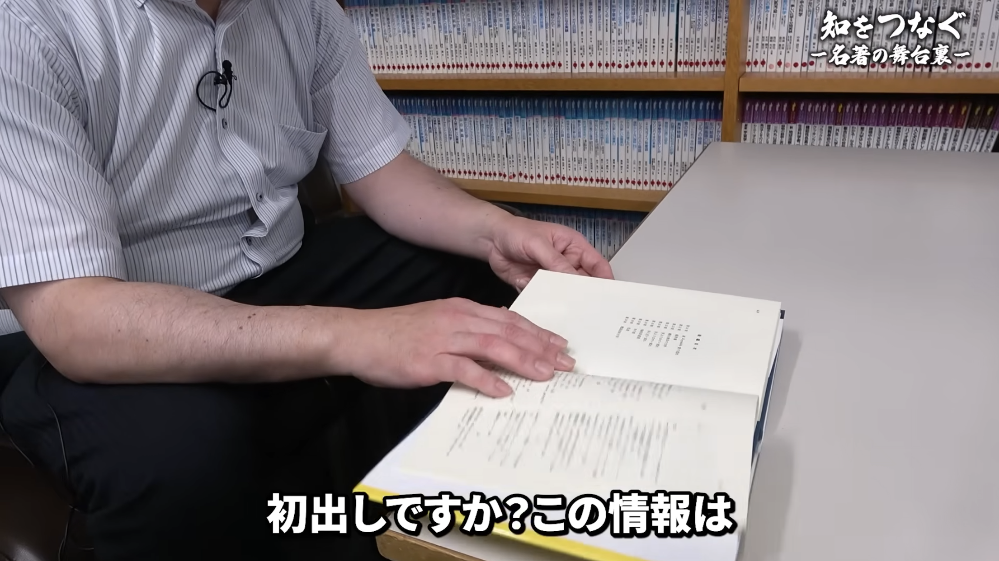
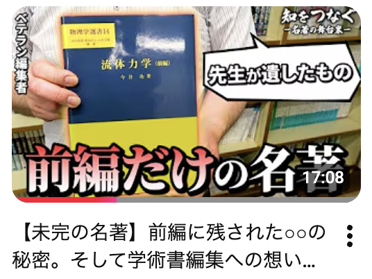
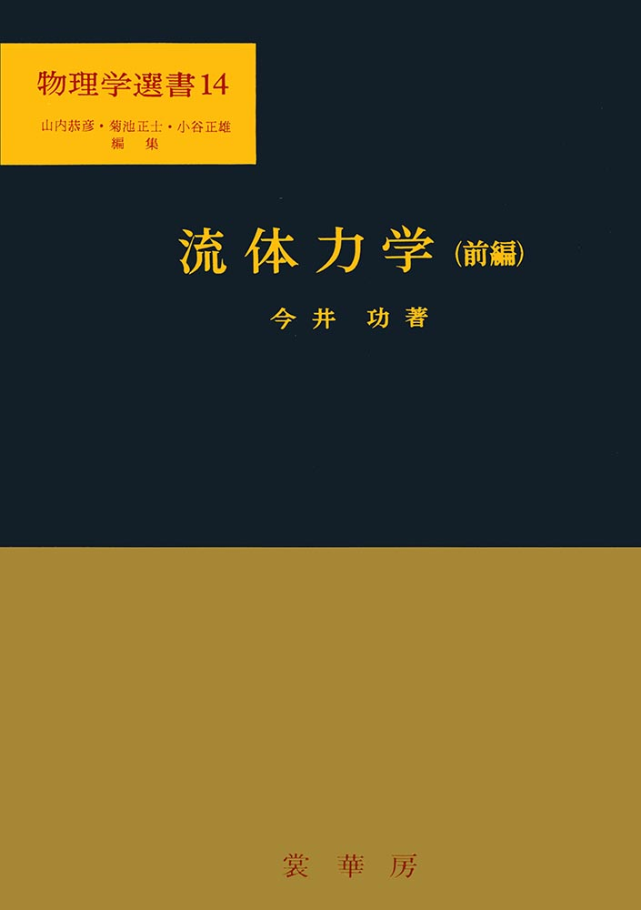
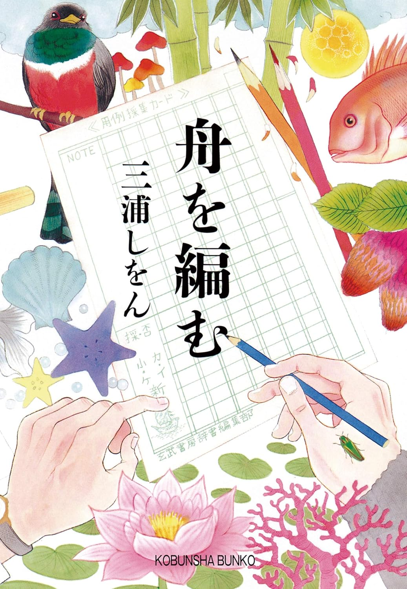

### 裳華房のYouTubeチャンネルが面白すぎるので語りたい！ #### 〜お前も裳華房のファンにならないか？〜 --- ### 自己紹介 <div class="profile-container"> <div class="profile-left"> * さめ(мег-сск) * ⚛️ VRChat物理学集会の主催 * 🧑🎓 社会人学生として通信制大学在学中 * 得意分野: * 📸 コンピュータビジョン (画像認識/点群処理) * 🌍 空間情報処理 (地理情報/リモートセンシング) * ☁️ クラウドインフラ設計/IaC (AWS, GCP) * [GitHub](https://github.com/s-sasaki-earthsea-wizard) * [YouTube](https://www.youtube.com/@SyotaSasaki-EW) * [Speaker Deck](https://speakerdeck.com/syotasasaki593876) </div> <div class="profile-right"> <img src="assets/images/icon_circle.png" alt="avatar" height="350px" width="350px"> </div> </div> --- <div class="simple-box"> * 本スライドで引用した画像やコメントの著作権はすべて株式会社裳華房に帰属します。 </div> --- ### 前編しか存在しない教科書 <div class="simple-box"> * 「この本、何かがおかしい…」 * 「前編」と書いてあるのに、後編が存在しない * 後編の目次だけが載っている * 「なぜ？」「後編はどこに？」「著者の意図は？」 </div>  --- ### 今日話すこと <div class="simple-box"> * **裳華房**: 物理や数学など自然科学書の出版社 * **YouTubeチャンネル**が面白すぎるので語りたい！ * **「未完の名著」**を巡るミステリーを紹介 </div>  <div class="caption">裳華房のYouTubeチャンネル。ぜひアクセスしてみてください！</div> --- ### 裳華房への愛を語りたい！ <div class="simple-box"> * プロモーションではありません！ * ただの裳華房ファンが推しへの愛を語りたいだけです！ </div> <br> <div class="highlight-box"> * 今日のトークの後、あなたが裳華房のファンになってくれたら大成功です！ </div> <div class="caption">QRコードからぜひアクセス！</div> --- ## 裳華房の紹介 --- ### 裳華房とは？ <div class="simple-box"> * 物理や数学など自然科学書の出版社 </div>  <div class="caption">裳華房の公式ウェブサイト。マスコットキャラの梅子ちゃんが可愛いですね！</div> --- ## どんな動画があるの？ --- ### 教科書の著者自身の講義動画や……  <div class="caption">著者の岸根先生がご自身で出演するという最高の販促ですね！研究者をYouTuberデビューさせる事業もやってると見ることができるかもしれません</div> --- ### 編集者が裏話を語ってくれたり……  <div class="caption">「初出しの情報」とは？気になる方は本編へ！</div> --- ### 理系版「舟を編む」 <div class="simple-box"> * 地味な企業の宣伝チャンネルなんじゃない？ * 面白い要素なんてなさそう </div> <br> <div class="highlight-box"> * 自然科学書の出版の裏には壮大なドラマがある！ * **理系版「舟を編む」**と言ってもいい！ </div> --- ## おすすめの1本 --- ### 未完の名著 <div class="simple-box"> * 【未完の名著】前編に残された○○の秘密。そして学術書編集への想いを語る【知をつなぐ】 </div>  <div class="caption">未完の名著？</div> --- ### 今井功「流体力学（前編）」 <div class="simple-box"> * 1973年初版でいまだに増刷されている名著 * 電子版もあります！ * タイトルに「前編」とあるけど、後編が書かれることなく今井先生がご逝去…… </div>  --- ### 存在しない本の目次 <div class="simple-box"> * 「前編」には存在しない後編の目次が載っている * 後編はないのにいまだに「前編」と銘打って出版されている * 「後編出ないんなら目次はない方がいい」という読者も </div> --- ### 動画で明かされた秘密 <div class="simple-box"> * 編集者の小野さんが最後に今井先生と会った時のエピソード * もう80代で体力的に厳しかったと思うが、「後編の原稿いかがですか？」と尋ねていた * 今井先生「本当に後編出せなくて申し訳ない。ただ……」 </div> <br> <div class="highlight-box"> * 今井先生はなんと語ったか？ * 「前編」に存在しない後編の目次が載り続けている理由は？ * ミステリーの謎解きは本編で！ </div> --- ## 編集者の仕事 ### 知識の継承の裏方 --- ### 「舟を編む」 <div class="simple-box"> * 三浦しをん先生の小説 * 「国語辞典出版」を題材にした物語 * 2012年本屋大賞受賞 * 映画やアニメ、ドラマも大ヒット * 編集者と国語学者が協力して辞書を作っていく極上の知的エンターテイメント </div>  --- ### 「舟を編む」のテーマ (個人の感想) <div class="simple-box"> ### **「自分の仕事、生き様を後世に伝えていく」** * 国語辞典出版は大プロジェクト * 作中で13年の時間が経過 * 登場人物たちのライフステージも変わっていく * さまざまな「継承」が描かれる </div> --- ### 未完の名著が語ること <div class="simple-box"> * 「知識の継承の裏方」の仕事 * 私たちが50年以上前に出版された本を読めるのも編集者の仕事のおかげ * 「未完の名著」の存在しない後編の目次が伝えるメッセージ </div> --- ### 知識の散逸 <div class="simple-box"> * 歴史的に失われた知識は多い…… * アレクサンドリア図書館 * アンティキティラ島の機械 * 10年前のブログのリンク先の参考文献 </div> <br> <div class="highlight-box"> * **出版社、編集者は知識の次世代への継承の役割を果たす！** </div> --- ### 他にもいっぱい貴重なお話を聞けます！ <div class="simple-box"> * 久保亮五先生の「熱学・統計力学」の舞台裏 * 1961年出版、1998年修訂版 * 学生時代の編集者の小野さんの激アツエピソード * 先生方への接待の爆笑エピソード * 「久保統計」の完全解答？ </div> --- ### まとめ <div class="simple-box"> * 裳華房のYouTubeチャンネルのチャンネル登録、高評価をしてください！ * 人様のチャンネルの宣伝を勝手にしました！ </div> --- ### LT登壇者の募集 <div class="simple-box"> * VRChat物理学集会ではLT登壇者を募集しています！ * どんなジャンルでもOK！ * 興味のある方はVRChat物理学集会のDiscordサーバーまで！ </div> <img src="assets/images/qrcode.png" width="200px">